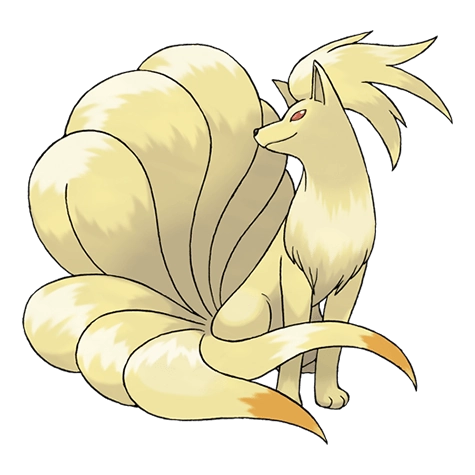

Назад
Найнтэйлс

Найнтэйлс — Покемон 1 поколения под номером 38 в Покедекс. Обитает он в регионе Канто и относится к Огненому типу. Это последняя стадия эволюции Покемона Вульпикса. Найнтэйлс излучает зловещий свет своими ярко-красными глазами, чтобы получить полный контроль над разумом своего врага. Говорят, этот Покемон живёт тысячу лет.
Тип:
Огненый
Эволюция
# 038 Найнтэйлс
Финальная стадия